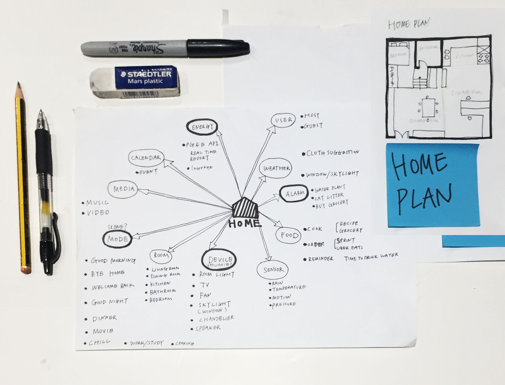
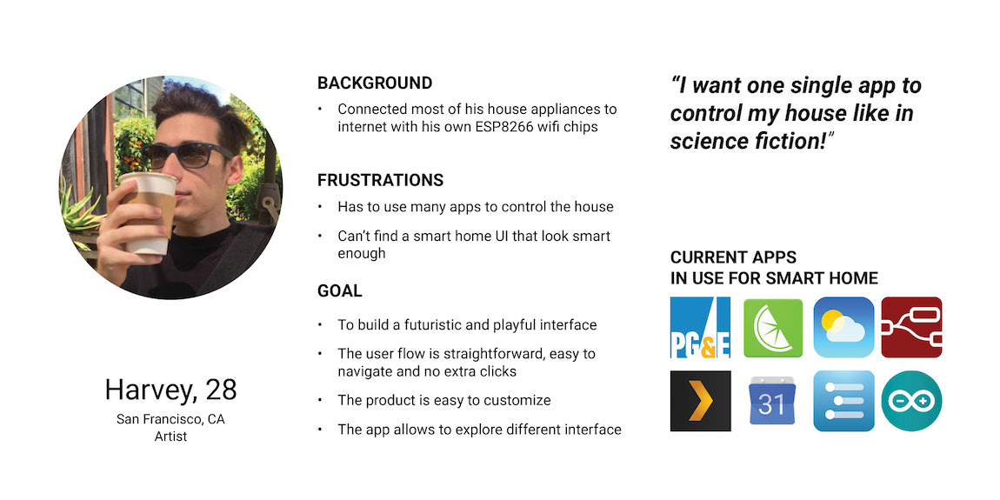
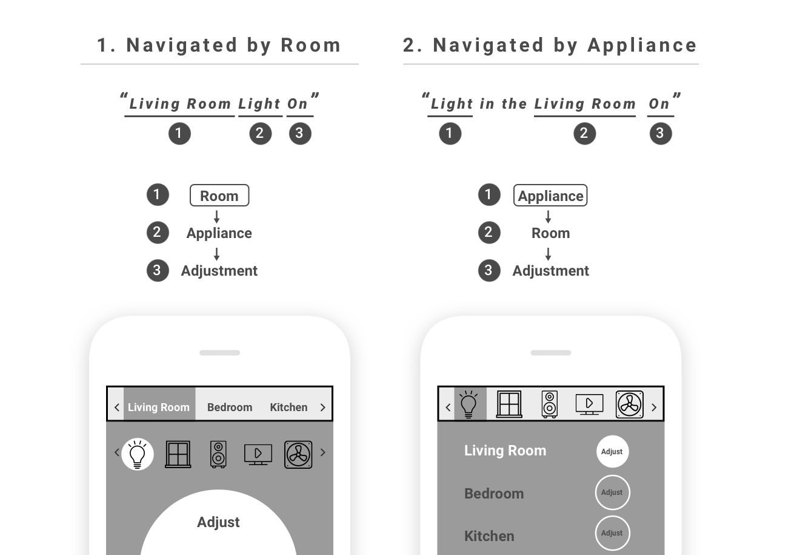
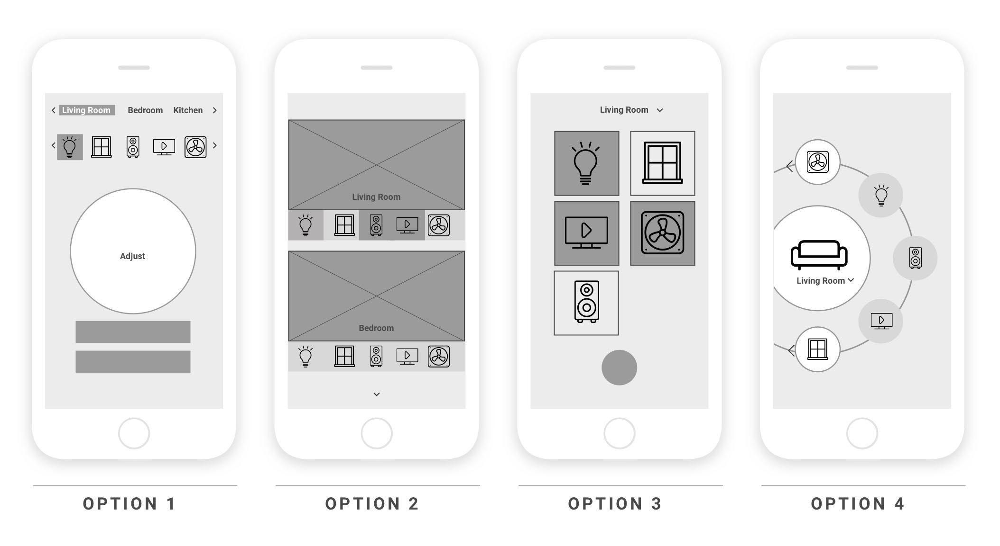

I started this project by interviewing users. I quickly picked one user as my primary persona and started to research about his home, like sketching the home plan and current smart device network.
After initial user interview and brainstorming about product features, I developed one fictional "primary persona" with his pain points and user goals.
I started the UX flow research by a simple question: how do users locate an appliance and then adjust it? I developed two flows which are shown below:
After a brief user testing, I found out that the first user flow is more familiar for most users. I decided to develop more UI with first option.
I started the UI development by sketching the mostly used page - appliances page. I developed 4 options following the UX model 'Room-Appliance-Adjust'.
I hosted a quick user review meeting afterwards, and learnt that the circular layout was the most compelling visually and users quickly understood the interactions needed. After reviewing the persona I developed and discussiing with users, I decided to choose the Option 4 - Circle UI as the main UI language.